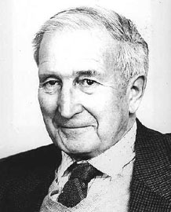

There is a God: Flew’s Pilgrimage of Reason

The book There Is a God is Anthony Flew’s concise record of his journey from atheism to deism in 2004. While he remained skeptical of life after death and a personal God, the text provides astounding resources for grounding faith in reason. His maxim to “Follow the evidence wherever it leads” is instructive for every pursuit of truth.
I highly recommend the book. It’s a short read that’s not too high level for people beginning to develop confidence in Christian apologetics. Plus, it’s a cheap $10 steal on Amazon (as of writing this blog at least).
Book Summary & Reflection
After witnessing the rise of Nazism, the problem of evil presented a serious issue for Flew as to God’s perfect goodness. Yet, by the end, he settled with God’s existence as independent from unwarranted evil. He ends the book with two solutions: (1) the Aristotelian God who does not intervene or (2) the traditional free will argument. However, the theistic terms to define free will depend on the possibility of revelation.
Flew rightly clarified theistic thought. In his 1950 paper “Theology and Falsification” he was correct to argue that we must conceptualize God in meaningful language with noncontradictory terms. The Christian might also agree with his 1971 “Presumption of Atheism” where he considered the burden of proof on the theists. We certainly have the responsibility to always be ready to give a defense to everyone who asks for the reason for our hope (1 Pet. 3:15).
As the 21st Century emerged, Flew changed teams. Following new evidence in Big Bang cosmology and DNA complexity, he found it led to the Divine Mind. The evidence of the Big Bang event shattered a brute fact: the universe has not always been. The multiverse conjecture cannot account for the beginning of everything (it merely pushes the problem back to a previous universe!) The fine-tuning of the universe and the conditions for life convinced Flew the cosmological argument provided a very promising explanation. Purpose-driven intelligence in the universe cannot spontaneously arise from unintelligent sources. Abiogenesis is nonsense. Something cannot come from nothing.
Flew said he found the Divine in a “pilgrimage of reason not of faith” (pg. 93). Of course, he means his discovery was not a supernatural encounter. Supernatural revelation might aid a conviction of Biblical truth, but we should emphasize faith is not dependent on specific emotions or any other type of experience. It is a passive persuasion of the mind. Flew discovered about God what is plain in creation (Rom. 1:19).
Flew never found direct revelation convincing. Not all convictions result in justification before God, no matter how earnest. The facts of the gospel are Jesus and His perfect gift of eternal life. The cosmological argument, while important, only brings someone to a cold and impersonal god who does not deliver us from eternal condemnation. They also must choose to respond to the Spirit’s conviction regarding sin, righteousness, and judgment to come (John 16:8).